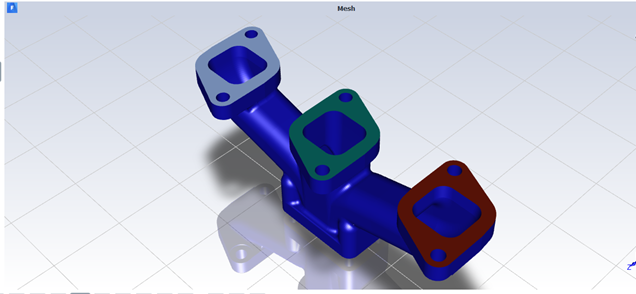

Fluid flow in exhaust manifold.

Problem Statement: Hot air flows through the 3 inlets at 925K and the same inlet velocity of 10m/s and then exits through the outlet. Convective heat transfer takes place between the fluid and the manifold.
Model of exhaust manifold.
Methodology/Steps:
A.Pre-Analysis and Setup:Open ANSYS Workbench and load Fluid Flow or ANSYS-Fluent.
B.Geometry:The geometry for this manifold was designed in Solidworks.
C.Mesh: Meshing was done in Fluent-Mesher with the default properties. The geometry workflow is selected as watertight geometry. Created caps for inlets and outlets of the exhaust manifold. The number of fluid regions is set to 1. Add boundary layers and generate the mesh.
D.Physics: Double click on setup to launch ANSYS-Fluent. After the mesh is done click on setup solution. Enable heat transfer by activating the energy equation. k-w SST turbulence model is used for viscous flow. Change the material from aluminum to cast iron and edit the properties and change them to cast iron. Apply the boundary condition for the inlet, setting the velocity, turbulence, and thermal boundary conditions to 10m/s, 10% for turbulence intensity, 40mm for hydraulic diameter and 925K for the inlet temperature. Change the outlet boundary conditions to 0.1 turbulent intensity fraction and 40mm for hydraulic diameter. Change the boundary wall conditions for the inlets, outlets, and wall, edit the heat transfer coefficient to 10 and the free stream temperature as 300K. In the solution method change the specific dissipation rate to first order upwind.
E.Solution: In the fluid report definition, enable it, to monitor the velocity, temperature, and mass flow rate throughout the manifold. Initialize the solution, change the number of iterations to 100 and time scale factor to 5. .